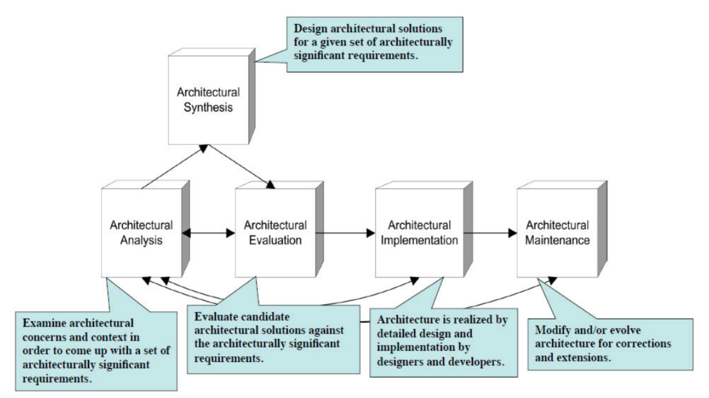
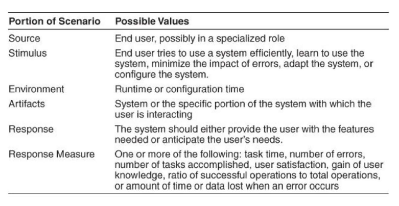
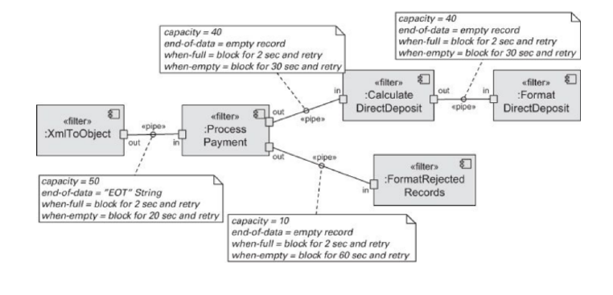
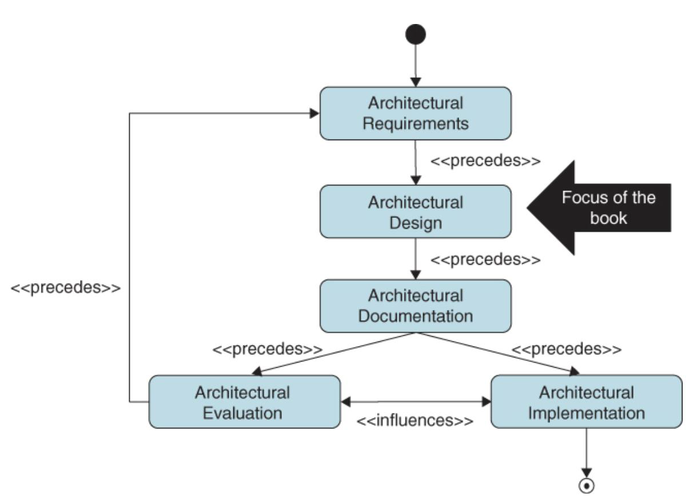

软件系统设计整理(架构部分)
软件系统设计整理(架构部分)
1. 介绍
- 理解软件工程
- 软件和硬件：
- 软件是不可见的：软件是虚拟的，而硬件是实体的。
- 软件制作出来就是为了被修改和改变的(软件的演化是他的本质属性)
- 科学和工程
- 科学的研究是研究这个世界既有的部分，而工程是研究的是人类创造新的世界(是不是因为人才产生的)，下面的图是很重要的。

- 软件和硬件：
注：Architecture可以翻译为架构，也可以是体系结构
什么是软件架构 Software Architecture 重要
- 定义1：程序或计算系统的软件架构是系统的一个或多个结构，其中包括软件组件，这些组件的外部可见属性以及它们之间的关系
- 定义2：系统的基本组织，体现在其组件，它们之间的相互关系以及环境以及支配其设计和演进的原则。
- 架构的一些概念
- Module，模块 是还没有实现出来的软件部分。
- Component，组件 是已经实现出来的软件部分。
- Connector，连接件 ：连接组件的部分
- Element，元素：包含 Component和 Connector。
架构与设计 Architecture vs. Design 重要
- 架构是属于软件设计的
- 所有的架构都是软件设计，但不是所有的软件设计都是架构
- 架构是设计过程的一个部分
- 其他观点
- 架构是更高层的设计
- 架构是设计决策的组合
- 架构是根据不同项目而不同的
- 系统的结构或组织
- 元素(Elements)：部件(Components)和连接件(Connectors)
- 关系：静态(static)和动态(dynamic)的关系
- 属性：元素，元素组和整个系统
- 架构是属于软件设计的
架构与结构 Architecture vs. Structure 重要
- 架构是包含结构信息的。结构是一种静态的、逻辑的、是关于系统如何构成的。架构除了包含结构，还会包含组件之间的相关的关系结构，还会定义一些动态的行为（组件可能和谁进行交互）
- 架构将系统分解成组件、模块和子系统，降低每一个部分的复杂度
- 架构定义了组件接口（组件可以干什么）、 组件交流和依赖（组件间如何沟通交流） 、 组件职责 （当我们询问它时，组件能明确知道自己的职责）
- 架构确定通信、通信需要
i. 数据通过机器传递，比如函数调用、 RMI、异步信息等
ii. 控制流， 组件的信息流来满足 需要的功能，比如序列化、并发并行和同步等。 - 架构强调 NFA（非功能性需求）
i. 功能性需求定义了系统能做什么，NFA定义了系统运行的多好
ii. NFA（又名架构需求 Architecture requirements 很少在功能性需求中被发现 ，必须由架构引出，包括：技术约束、商业约束、质量属性
架构与软件架构
- 架构的作用仍然保持一致： 倾听用户理解需求、 检查灵活性、形成实际结构版本创建蓝图 、监督构建过程保证计划符合规范、引导暴风雨式的设计变更、危机和歧义。
- 软件架构是监督软件的构造过程：开发人员、工程师和设计者。
软件系统架构的来源 重要
- NFRs、ASRs（关键架构需求 architecturally significant requirement，ASR）、质量需求、涉众、组织、技术环境等等
架构师的职责 重要
- 联络
- 在客户、技术团队和业务/需求分析师之间
- 与管理层或市场部门
- 软件工程
- 软件工程最佳实践
- 技术知识
- 对技术领域的深入理解
- 风险管理
- 与设计、技术选择相关的风险
- 联络
如何创建一个设计
- 设计活动目标：生成一个适应约束并且达到系统质量和业务目标的设计
- 广义设计策略
- 分解 ：针对某一个系统关注点进行分解后处理。
- 质量属性可以分解 ，并分配给分解后的元素
- 如何对非 ASR进行设计 ASR仅意味着需求的优先级仍然可以满足非 ASR 需求来满足其他人 ，除非您即将满足需求 、需要重新确定需求优先级并重新设计，和您不能满足需求
- 一次设计所有的ASR还是一个ASR？通过经验和教育 ，我们会有直观的设计方法 ，并使用模式/策略来设计多个ASR
- 抽象：使用抽象让设计师关注本身结构而不是实现
- 分而治之：对于一个大规模系统，每次聚焦一部分。
- 生成和测试
- 迭代和细化：使用迭代的方法，每次对上一迭代进行精化。
- 重用元素：复用在设计过程中出现的可以复用的元素。
- 分解 ：针对某一个系统关注点进行分解后处理。
架构视图 重要
为什么使用架构视图？ 架构视图主要是为了应对软件不可见的问题，屏蔽其他没有影响的部分，将关注点分离。
什么是架构视图？一组系统元素和它们之间的关系表示（不是所有的系统元素 ，而是特定类型的元素）
**为什么软件系统架构需要用不同的视图来文档化？**不同的视图支持不同的目标和用途 ，突出不同的系统元素和关系，在不同程度上暴露了不同的质量属性。
K.Kruchen的4+1视图模型（会画图）
逻辑视图：描述了体系结构中在体系结构上明显重要的元素以及他们之间的关系
进程视图：描述了体系结构中的并发和交流元素
物理视图：描述了主要过程和部件是如何映射到应用硬件上的
开发视图：描述了软件部件是如何在软件内部组织的，比如配置管理工具
用例场景(Use Case Scenarios)：捕获架构需求，与一个或多个特定视图相关
视图名 关注点 面向对象角色 表示方式 1️⃣ 逻辑视图 功能划分，类的结构和交互 开发人员 UML 类图、对象图 2️⃣ 开发视图（实现视图） 模块结构，代码组织 开发/构建者 包图、组件图 3️⃣ 进程视图 运行时行为，多线程、通信 测试/性能分析者 活动图、通信图 4️⃣ 物理视图（部署视图） 部署拓扑、服务器结构 运维工程师 部署图、网络图 ➕ 场景视图（用例视图） 主要功能场景、用例驱动 所有人（尤其是客户） 用例图、文本 软件架构 Software Architecture
- 定义：上面有了，此处不重复
- 活动：
- 创建系统的商业案例
- 理解用户的需求
- 创建和选择架构
- 沟通体系结构（在涉众、开发商之间）
- 分析或评估架构（整体方法论和具体技术的质量）
- 实现架构
- 保证架构的一致性
- 软件系统架构担当的角色：
- 代表决定如何实现需求的决策的第一批人工制品 （早期设计决策），代表了最难更改的设计决策，值得最详细的考虑。
- 架构是完成产品生产线工程 (Product line Engineering) 的关键， 与独立开发每个系统相比，以较少的工作量、成本和风险来对一系列相似系统进行严格的开发。
- 当人开始在系统上工作时， 构架通常是首先要检查的设计工件。
- 软件架构为维护和修改决策提供了参考框架
- 为什么软件架构是重要的
- 软件架构提供了沟通的工具：是可以确定和谈判利益冲突的参考框架
- 软件架构表现了最早期的决策集合
- 软件架构促进或阻碍质量属性的实现
- 软件架构会影响质量
- 软件架构引发有关潜在变更的讨论：软件架构将更改分为三种类型，本地（单组件修改）、 非本地（多组件修改）、架构（修改系统基本结构、通信和协调结构）
- 软件架构是一种可迁移和可重用的抽象
- 软件架构是产品通用性的基础： 整个产品线共享一个软件架构
- 可以通过体系结构集成独立开发组件来开发系统
- 软件架构过程(活动) 重要
- 通过 StackHolder获取到 ASRs
- 通过分析得到 Prioritized Quality Attribute Scenarios(高优先级质量属性场景 )和 Requirements Constraints(需求和约束 )
- 将上述部分，结合模式和策略，综合可以得到架构的设计
- 根据架构的设计得到由模式决定的候选视图的示意图，之后完成文档化
- 选择、组合视图，将文档进行进一步的评估，这一部分需要 StackHolder的参与、也需要 Prioritized Quality Attribute Scenarios和文档等作为参考。
- 体系结构生命周期
- Systhesis：合成，混合，综合
- 
- 架构知识域
- 上下文（ Context）：软件开发生命周期，需求、设计、构造、测试
- 关键点：并发、控制和处理时间、分布式、异常处理、交互系统、持久化
- 软件设计方法：架构方法 ADD、设计方法
2. 质量属性 Quality Attributes
需求
- 需求分类
- 功能性需求 functional requirements
- 质量需求 quality requirements，也叫非功能需求NFR
- 约束 constraints
- 功能性需求
- 定义系统必须做什么，并且强调系统如何提供价值给涉众
- 功能是系统完成其预期工作的能力，很大程度上与结构无关
- 质量需求（替代术语：非功能需求、体系结构需求） 重要
- 系统应在功能性需求之上提供的整个系统的合乎需求的特性
- 质量属性是由软件系统的业务目标所决定的
- 如果质量需求很重要，软件系统架构会将其映射到各种结构上
- 分为两类：
- 执行过程中可观察（外部）：系统满足其行为要求的程度如何 ？例如性能 、安全性、 可用性等
- 执行期间不可观察（内部）：系统的维护 、集成或测试有多容易 ？例如可修改性、 可移植性、可重用性和可测试性等。
- 约束 重要
- 约束是具有零自由度的设计决策
- 约束是已经做出的预先指定的设计决策
- 通过接受设计决策并将其与其他受影响的设计决策进行协调，可以满足约束条件
- 为什么软件系统结构被认为是解决质量问题的最合适层次：
- 开发完成后，质量不能被添加到软件密集型系统中，软件开发的所有阶段都需要解决质量问题：即没有办法先实现功能，然后再尝试实现非功能性需求。
- 软件体系结构限制了各种质量属性的实现，例如性能、安全性和可用性等。
- 质量属性 Quality Attributes
- 开发完成后，质量不能添加到软件密集型系统中
- 在软件开发的所有阶段都需要解决质量问题
- 业务目标确定系统必须具备的质量
- 质量属性是系统功能的基础，而功能是系统功能、服务和行为的基本说明
- 软件体系结构限制了各种质量属性的实现，例如性能，安全性，可用性等
- 质量属性分类 重要
- 内部属性：对于开发人员而言的，例如可测试性
- 外部属性：对于用户而言的，例如性能
- 如何定义质量属性
- 为了在架构级别对其进行评估，必须对质量属性进行精确定义。
- 可以使用质量属性场景(Quality attribute scenarios)定义所需的质量属性
- 质量属性场景 Quality attribute scenarios 重要
- 场景是具有一定结构的简单句子。场景的两个主要类别是：
- 通用场景是与系统无关的方案，用于指导质量属性要求的规范
- 具体场景是系统特定方案，用于指导特定系统的质量属性要求的规范。它们是通用场景的实例
- 这个场景就是4+1视图中的1(Use Case)
- 场景是具有一定结构的简单句子。场景的两个主要类别是：
- 通用场景 General Scenarios
- 通用方案提供了一个框架，用于生成大量通用的，独立于系统的，质量属性特定的方案
- 每种情况都可能，但不一定与我们所关注的系统相关
- 为了使一般情况对特定系统有用，我们必须使它们特定于系统
- 使通用场景系统特定于特定环境意味着将其转换为特定系统的具体术语
- 质量属性场景建模 重要
- 刺激(Stimulus)：到达系统时需要考虑的条件
- 刺激源(Source of Stimulus)：产生刺激的实体(人，系统或任何促动器)
- 响应(Response)：刺激措施到来之后开展的活动
- 响应度量(Response Measure)：对刺激的响应应以某种方式进行测量，以便可以测试需求
- 环境(Environment)：发生刺激时系统的状况，例如过载，正常运行等
- 工件(Artifact)：需求适用的整个系统或系统的一部分
- 只要定义好这6个元素，就能锁定架构的一个场景，之后可以用来进行架构的设计
- 策略/战术(原子级别的最小的决定) Tactics
- Tactics是影响质量属性相应控制的设计决策，比如冗余。
- 体系结构策略 Architecture Strategy：策略的集合。
- 像模式(pattern)一样，策略也可以由其他策略组成，例如，冗余可以由数据的冗余，计算的冗余组成。设计人员根据需求选择一个或另一个
- 质量设计决策 Quality Design Decisions
- 架构是设计决策的集合
- 七种设计决策
- 职责分配 Allocation of responsibilities：将大的职责进行分配
- 协调模型 Coordination model：各部分之间的沟通、交互
- 数据模型 Data model：数据格式、存储方式(缓存等)
- 资源管理 Management of resources：CPU、网络、内存、时间(部分时间敏感的场景)等资源
- 架构元素之间的映射 Mapping among architecture elements：将架构元素如何映射到软件的实现上
- 绑定时间决策 Binding time decisions：
- 系统的变化可以在什么时间点前需要固定下来，也就是这个时间前，系统还是可以变化的，但是这个时间之后就不可以变化了
- 比如选择安装环境是需要在一个时间点前完成的，技术是否添加、编译时间、初始化时间，运行时绑定，但运行时是弹性最大的
- 实际上我们希望绑定时间越往后越好，但是也就要付出相应的代价。
- 技术选择 Choice of technology：前面的部分都确定后，我们可以选择技术栈的相对比较局限，解空间已经被压缩了。
课上涉及的7个质量属性都要会，尤其是可用性
可用性 Availability
可用性是应用程序的关键要求，以可用的时间来度量
一些指标
- MTBF Mean Time Between Failure
- MTTR Mean Time To Repair
- 可用性：MTBF / (MTBF + MTTR)
通用场景
场景要素 可能的值 刺激源 内部/外部：人员，硬件，软件，物理基础设施，物理环境 刺激 故障：遗漏，崩溃，错误时序，错误响应 工件 处理器，通信渠道，持久存储，进程 环境 正常操作，启动，关闭，修复模式，降级运行，超负荷运行 响应 防止故障成为故障。 检测故障：1.记录故障 2. 通知适当的实体 故障恢复：1.禁用引发故障事件的源 2. 在修复过程中暂时不可用 3. 修复或掩盖故障/失败或抑制其造成的损害 4. 在修复过程中以降级模式运行 响应度量 系统必须可用的时间或时间间隔、可用百分比（如99.999%）、检测故障时间、修复故障时间、系统可在降级模式运行的时间或时间间隔、预防某类故障或处理不失败的比例（如99%）或速率（如每秒最多100次） 具体场景
场景要素 可能的值 刺激源 心跳监视器 刺激 服务器无响应 工件 处理流程 环境 正常操作 响应 通知操作组件继续操作 响应度量 无下线时间 可用性策略
- 输入：Fault
- 可用性策略：检测错误、错误恢复、预防错误
- 一些重要的策略
- 错误检测
- Ping/Echo：隔一段时间交流一次状态信息
- HeartBeat：持续传输状态信息
- Exception：抛出异常并捕获处理
- 错误恢复
- Vote：多个处理器同时执行相同的计算。一个“投票器”机制会比较这些处理器的结果；如果有一个处理器的输出与其他的显著不同，它会被认为是故障并被忽略。系统会采用其他处理器一致的结果。这是一种容错方式，可以屏蔽单个组件的错误。
- 主动冗余（Active Redundancy）：所有冗余组件都处于活动状态，并同时处理相同的输入。但只会使用其中一个组件的输出，其余的则被丢弃。如果某个组件出现故障，其他组件会立即继续，无需中断，因为备用始终就绪，几乎没有停机时间。
- 被动冗余（Passive Redundancy）：一个主组件承担工作，另一个从组件处于被动监控状态。如果主组件故障，从组件接管工作。但从组件需要先同步最新状态以确保一致性，因此在切换过程中会有短暂的停机时间。
- 备用（Spare）：准备一个完整的备用系统，以便在多个组件发生故障时，能够整体替换。
- Shadow operation：之前出现过错误的组件先以Shadow operation模式运行，确认正常后再恢复它的地位
- Checkpoint/Rollback：错误发生后回滚到检查点
- 预防错误
- Removal from service：将一些高风险组件移出服务组
- Transaction：以事务方式服务，一旦出错立刻回滚
- Process monitor：监控器可以检测到不正常的进程，并创建一个新的实例，将其初始化为某个适当的状态，就像备用策略一样。
- 错误检测
- 输出：Fault被屏蔽或完成恢复
互操作性（Interoperability)
互操作性是指两个或多个系统可以在特定的上下文中通过接口有效交换有意义的信息的程度，包括语法可操作性（ 交换数据的能力）和语义可操作性 （能够正确解释数据）。互操作性需要确定谁、什么以及在什么情况下（上下文）。
影响因素：发现（发现服务位置、身份和接口）、处理响应（返回、转发、广播）
通用场景
场景要素 可能的值 刺激源 系统发起与另一个系统进行互操作的请求 刺激 请求在系统之间交换信息 工件 希望进行互操作的系统 环境 希望互操作的系统在运行时被发现或在运行前已知 响应 以下之一或多个：1.请求被（适当地）拒绝，并通知了适当的实体（人员或系统）2.请求被（适当地）接受，信息交换成功 3.请求被参与的一个或多个系统记录 响应度量 以下之一或多个：1.正确处理信息交换的百分比 2.正确拒绝信息交换的百分比 具体场景
场景要素 可能的值 刺激源 车辆的信息系统 刺激 发送当前位置 工件 交通流量检测系统 环境 系统知道运行情况 响应 系统结合当前位置信息和谷歌地图、卫星数据等 响应度量 信息准确率达到99.9% 策略
- 输入：信息交换请求
- 具体策略：
- 定位：发现服务
- 管理接口：编排、定制界面
- 输出：请求被正确处理
可修改性 Modifiability
可修改性涉及到更改以及进行更改所需花费的时间或金钱，包括这种可变更性影响其他功能或质量属性的程度
影响因素：变更是什么？变更可能性？何时谁进行变更？变更成本？
通用场景
场景要素 可能的值 刺激源 终端用户，开发人员，系统管理员 刺激 指令去增加/删除/修改功能，或更改质量属性、容量或技术 工件 代码，数据，接口，组件，资源，配置等 环境 运行阶段，编译阶段，构建阶段，启动阶段，设计阶段 响应 以下之一或多个：1.进行修改 2.测试修改 3.部署修改 响应度量 以以下方面衡量的成本：1.受影响工件的数量、大小、复杂性 2.所需努力 3. 需要的时间 4. 花费的金钱 5. 修改影响其他功能或质量属性的程度 6. 引入的新缺陷
具体场景
场景要素 可能的值 刺激源 开发者 刺激 想要修改UI 工件 代码 环境 设计阶段 响应 完成修改并通过测试 响应度量 在3小时内完成 策略
- 输入：更改到来
- 具体策略：
- 减小模块大小：拆分模块
- 增强内聚：增加语义一致性
- 降低耦合：封装、使用中介打破依赖、重构
- 推迟绑定
- 输出：在时间和预算范围内完成更改
性能 Performance
性能与时间有关，和系统满足时序要求的能力有关（单位时间能做多少事情）
影响要素：处理时间（正在响应）和阻塞时间（无法响应）
通用场景
场景要素 可能的值 刺激源 系统内部或外部 刺激 周期性事件、零星事件或随机事件的到来 工件 系统或系统中的一个或多个组件 环境 操作模式：正常、紧急、峰值负载、超负荷 响应 处理事件，改变服务级别 响应度量 延迟、截止时间、吞吐量、抖动、错失率 具体场景
场景要素 可能的值 刺激源 用户 刺激 初始事务 工件 系统 环境 正常操作 响应 事务执行 响应度量 平均延迟为2秒 策略
- 输入：事件到达
- 具体策略
- 控制资源请求：管理采样频率、限制事件响应（排队）、事件优先级排序、减少过载、限制处理时间、提高资源利用率。
- 管理资源：增加资源、引入并发、计算资源多备份、 数据资源多备份、限制队列长度、调度资源。
- 输出：在一定时间限制内生成响应
安全性 Security
安全性衡量系统保护数据和信息免遭未授权应用的能力，同时仍提供对授权人员和系统的访问权限
影响要素：保密性（Confidentiality 防止未授权访问）、完整性（Integrity 防止未授权操作）、可用性（Availability 系统可供合法使用）
通用场景
场景要素 可能的值 刺激源 人或其他系统，之前可能被正确或错误地识别，或当前未知。攻击者可能来自组织外部或内部。 刺激 未授权尝试显示数据、更改或删除数据、访问系统服务、更改系统行为或降低可用性。 工件 系统服务、系统内的数据、系统组件或资源、系统产生或消费的数据。 环境 系统是在线还是离线；连接或断开连接到网络；在防火墙后面或开放网络；完全运行、部分运行或不运行。 响应 事务以如下方式进行： 1.保护数据或服务不被未经授权访问 2.防止未经授权的数据或服务操作 3.参与事务方明确识别，确保可靠 4.事务参与方无法否认其参与 5.数据、资源和系统服务可用于合法使用 系统通过以下方式追踪活动： 1.记录访问或修改 2.记录访问数据、资源或服务的尝试 3.在明显攻击发生时通知适当实体(人员或系统) 响应度量 以下之一或多个： 1.系统在特定组件或数据值被破坏时的损失程度 2.从攻击检测到的时间 3.成功抵御多少次攻击 4.从成功攻击中恢复所需时间 5.特定攻击下的数据易受损害程度 具体场景
场景要素 可能的值 刺激源 远程的恶意用户 刺激 试图修改支付率 工件 系统数据 环境 正常操作 响应 系统维持审计踪迹 响应度量 正确数据在一天内恢复并且攻击来源被标识 策略
- 输入：攻击
- 具体策略
- 检测攻击： 发现入侵（通过流量或签名） 、检测服务拒绝、检查消息完整性（ 通过校验或哈希)、检查消息延迟
- 防御攻击：验证(Identity)、授权(Authorize)、认证(Authenticate)请求者、限制资源访问、限制暴露、加密数据、分离实体、修改默认设置
- 响应攻击：撤销对敏感资源访问、锁定电脑、告知请求者
- 从攻击中恢复：对系统的追踪、 快照存储
- 输出：系统检测、防御、响应或恢复
可测试性 Testability
可测试性是指可以使软件通过（通常是基于执行）测试来证明其故障的难易程度
通用场景
场景要素 可能的值 刺激源 单元测试员、集成测试员、系统测试员、验收测试员、终端用户，手动执行测试或使用自动化测试工具 刺激 由于编码增量的完成而执行一组测试，如类层或服务，子系统完整集成、整个系统的完整实现或系统交付给客户。 工件 系统正在被测试的部分 环境 设计阶段、开发阶段、编译阶段、集成阶段、部署阶段、运行阶段 响应 以下之一或多个：1.执行测试套件并记录结果 2.记录导致故障的活动 3.控制并监控系统状态。 响应度量 以下之一或多个：1. 找到故障或故障类别的工作量 2. 实现给定状态空间覆盖百分比的工作量 3. 故障被下一个测试揭示的概率 4. 执行测试所需时间 4.发现故障需要的工作量 5. 测试中的最长依赖链长度 6. 准备测试环境所需时间 7. 降低风险暴露（损失大小×出现概率） 具体场景
场景要素 可能的值 刺激源 单元测试人员 刺激 代码单元完成 工件 代码单元 环境 开发环境 响应 捕获测试结果 响应度量 3小时内达到85%路径覆盖率 策略
- 输入：执行测试
- 具体策略
- 控制和观察系统状态：专用界面、记录或回放故障、本地化状态存储、沙盒（保证实验消除后果）
- 限制复杂度：限制结构复杂性（减少依赖关系、继承深度、多态和动态调用、限制行为不确定性。
- 输出：检测到错误

易用性 Usability
易用性与用户完成所需任务的难易程度以及系统提供的用户支持的类型相关。
影响因素：学习系统功能、有效使用系统、 最小化错误影响、 使 系统适应 用户需求、增强 信息和满意度。
通用场景
- 
场景要素 可能的值 刺激源 最终用户，可能在一个专门化角色中 刺激 最终用户尝试高效使用系统、学习使用系统、最小化错误影响、调整或配置系统。 工件 系统或用户正在交互的特定系统部分 环境 运行阶段或配置阶段 响应 系统应为用户提供所需功能或预见用户需求 响应度量 以下之一或多个：任务时间、错误数量、完成任务数量、用户满意度、用户知识获取、成功操作与总操作的比例、错误发生时丢失的时间或数据量 具体场景
场景要素 可能的值 刺激源 用户 刺激 下载一个新应用 工件 系统 环境 运行时 响应 用户高效使用系统 响应度量 在2分钟的试用之后 策略
- 输入：用户请求
- 具体策略
- 支持用户操作： 取消、撤销、暂停恢复、 将对象成组操作
- 支持系统操作：维护任务模型（确定上下文对任务建模）、 维护用户模型（预期的知识)、维护系统模型（预期的系统行为）
- 输出：用户被给出正确的反馈和帮助
3. 架构模式
架构攸关的需求 ASR
什么是ASR(Architecturally Significant Requirements) 重要：架构攸关需求是对体系结构产生深远影响的需求（影响了关键体系结构设计决策）。大部分的质量需求和所有的约束就是ASR
如何系统地识别ASR和其他因素 重要
从需求文档中收集 ASR：可以使用“ MoSCoW”法则或用户故事来收集需求（不过难以收集质量需求 ）,但它对于质量需求的定义是很有限的
通过采访涉众来收集 ASR：可以使用质量属性工作坊（QAW，Quality Attribute Workshop，用于在软件架构初期阶段识别、澄清并优先排序系统的质量属性需求）
通过了解业务目标来收集 ASR
通过质量属性效能树（Utility Tree）来管理 ASR：把Utility拆分成质量属性和场景，最后变成指标，叶节点要有两个维度评价：对用户的重要程度和开发难易程度。它以“树”的形式，从高层的质量属性（如性能、安全性）向下展开为更具体的场景，使得系统性分析质量需求变得可视、清晰且可评估。
1
2
3
4
5
6
7
8Utility
|
---------------------
| | |
性能 安全性 可用性
| | |
首页加载≤2s 拒绝SQL注入 宕机≤5分钟
(重要5/难度2) (重要4/难度3) (重要5/难度4)
架构模式
- 架构模式 Architecture pattern 重要
- 定义：架构模式是在实践中反复发现的一套设计决策，具有允许重复使用的已知属性，并且描述了一类架构
- 架构模式关联了如下三种角色：
- 上下文(Context)：世界上经常发生问题的场景。
- 问题(Problem)：在给定上下文中出现经过适当概括的问题。
- 解决方案(Solution)：针对问题的成功的经过适当抽象的解决方案。
- 分类 重要
- 模块化模式 Module Patterns
- 特指开发态（静态）
- 例如：分层模式 layered pattern、微内核模式 micro-kernel pattern
- 组件-连接器模式 Component-Connector(C&C) Patterns
- 倾向于描述运⾏态（动态）
- 其中 Component 可以连接 1 对多的关系，Connector 只能连接⼀对⼀的关系
- 例如：中继器模式 Broker Pattern、MVC 模式、管道-过滤器模式 Pipe-Filter Pattern、客户端-服务端 client-server 模式、P2P 模式、服务优先模式 service-oriented pattern、发布-订阅模式 publish-subscribe pattern、共享数据模式 share-data pattern 、SOA 模式
- 分配模式 Allocation Patterns
- 把软件的元素部署/分配到⾮软件的环境当中
- ⽐如：
- Map-reduce Pattern：充分引⼊并⾏，在不同计算资源上部署
- Multi-tier Pattern：把⼀组运⾏在相同计算资源上的元素进⾏不同的组合（逻辑关系）
- 模块化模式 Module Patterns
分层模式
概述
- 分层模式用来构造可以分解为子任务组的程序，每个子任务组都处于一个特定的抽象级别，每层都为下一个提供更高层次的服务。分层模式的关键点在于确定依赖，核心是关注点分离（必须逐层访问）
- 上下文：一般桌面应用、 Web（OSI的七层网络模型）
- 优点：高内聚、松耦合、易于维护
- 缺点：降低系统的性能，导致级联修改增加开发成本
分层模式变体
微内核模式：
微内核架构（Microkernel Architecture），也被称为插件化架构（Plugin-in Architecture），是一种面向功能进行拆分的可扩展架构。
微内核架构包含两类核心的组件：核心系统（Core System）和插件模块（Plug-in modules）。核心系统负责与具体功能无关的通用功能，例如应用生命周期的管理、插件模块的管理；插件模块负责实现具体的功能，每个模块都通过插件实现，每一个插件都只做一件事情。
代理模式
- 概述
- Broker Pattern，属于组件-连接器模式
- 代理体系结构模式可以用于构建分布式软件系统，其中具有通过RMI交互的分离组件，代理组件负责协调通信，如转发请求，以及传输结果和异常。
- 上下文：多个同步或异步交互的远程对象组成的系统。
- 解决方案：通过提供隔离通讯相关的代理，将系统通信功能与主应用程序分开
- 优点：提高了 Client和 Server之间的交互性，提高可伸缩性和可扩展性，整体大集群的性能可能会提高 (QPS等提高 )，但是局部单点性能会下降，多次网络请求、多次匹配，有可能会抵消。
- 缺点：代理增加前期复杂度 、 可能成为通信的屏障 、 可能成为安全攻击的目标 、 难以测试。
模型-视图-控制器模式
- 概述
- MVC： Model，View，Controller
- 使用运行时、动态、相互之间的关系来审视，集成到了开发框架中，也是分层架构的变种 （强调模块间约束关系 model不可以直接返回到 controller），分为 model（业务逻辑）、 view（处理用户展示，接收用户操作）、 controller（对用户操作进行处理，将信息通知给model）
- 优点：耦合性低，重用性高 ，生命周期成本低，部署快，可维护性高，方便管理
- 缺点：没有明确定义，不适于中小型应用程序，增加实现复杂度，视图和控制器过于紧密，视图对模型访问低效
- 概述图
管道和过滤模式
- Pipe-and-Filter Pattern，属于组件-连接器模式
- 管道和过滤器模式应用在顺序处理结构中，有一系列filter体现依赖关系。
- Filter 相当于 Component，起数据处理、计算作用，每个 Filter 有 input 和多个 output，将数据处理后传递给后续部分。
- Pipe 相当于 Connector，连接 filter，将 output 导入到其他的 filter 的 input 中去，不会独立存在。
- 缺点：不适用于互动式系统，过多的过滤器导致大量的计算开销。
- 结构图
- 
- 每一个组件表示filter 连接组件的部分是 pipe，任何一个 filter都依赖于前一个filter的输出（没有其他机会接收外部交互），不适合 交互 的场景（破坏依赖关系）
客户端服务器模式
- Client-Server Pattern 属于组件-连接器模式
- 客户端-服务器模型是一种分布式应用程序结构，它在资源或服务（称为服务器）和服务请求者（称为客户端）的提供者之间划分任务或工作负载。客户端和服务器通常通过计算机网络在单独的硬件上进行通信，但客户端和服务器可能位于同一系统中。服务器主机运行一个或多个与客户共享资源的服务器程序。客户端不共享其任何资源，但请求服务器的内容或服务功能。因此，客户端启动与等待传入请求的服务器的通信会话
- 包含了两类不同的Component，没有 broker可以动态改变 Client 和 Server 的关系，成对的关系相对固定。
- 上下文：Windows的客户端应用（桌面应用）
- 缺点：服务器成为性能瓶颈、可能单点失效、决定在哪里实现功能的决定也是复杂的（并且难以修正）
- 结构图
- ATM验证身份，某一个验证 Server可以给很多设备提供服务
- ATM操作安全监控、 盗刷之类，通过 monitoring可以发现问题找到记录。
- 对于银行工作人员，需要添加新的业务，policy发生变化，银行工作人员可以定义ATM的操作
- 银行负责安全金融的可以根据ATM、对照用户操作行为是否有安全隐患，多对多
- 与代理模式(Broker Pattern)的比较
- Broker也存在 Client和 Server之间的关系 但Client-Server架构导致互操作性有所降低（没有 broker，需要人为制定固定连接），而 CS不采用 broker 可能导致被拦截
- 而在小型局域网（互联网还没有普及）时，规模有限，直接联系，性能与安全性平衡可能带来更大的收益。
点对点模式
- Peer-to-Peer Pattern 属于组件-连接器模式
- 点对点模式中的组件，可能这一时刻为提供者，下一时刻是消费者（对等的）。同时点对点模式不仅仅提供服务，还能提供物流 ，每个 peer可能有一个规定对的连接数。
- 上下文：分布式应用程序体系结构，应用于对等体之间划分任务或工作负载。
- 缺点：安全性管理、数据持久化、数据/服务可用性（availability）、备份、修复更复杂 、 小型点对点系统不能持续实现质量目标，类似性能（ performance）和可用性(availability)
- 结构图
- 安全性：节点既是Client又是 Server，被攻击的可能性提高。
- 可用性：数据分布在不同节点上，相同数据多处拷贝，可能导致数据不一致 ，但是能保证个别数据出现问题不影响整体。
- 性能：多个节点同时提供服务，性能好
- 客户端-服务器架构与点对点架构的比较
- 除了客户端-服务器模型之外， 分布式计算应用程序通常使用点对点 (P2P) 应用程序架构。
- 在客户端-服务器模型中，服务器通常设计为作为为许多客户端提供服务的集中式系统运行。服务器的计算能力，内存和存储要求必须适当地缩放到预期的工作负载（即同时连接的客户端数量）。负载平衡和故障转移系统通常用于扩展服务器实现
- 在点对点网络中，两个或多个计算机（对等体）汇集其资源并在分散的系统中进行通信。 对等体是非分层网络中的同等节点或等效节点。与客户端 -服务器或客户端-队列-客户端 网络中的客户端不同，对等体直接相互通信。在对等网络中，对等通信协议中的算法平衡负载，即使是具有适度资源的对等体也可以帮助共享负载。如果节点变得不可用，则只要其他节点提供服务，其共享资源就保持可用。理想情况下，对等体不需要实现享资源就保持可用
- 客户端 -服务器和主 -从都被视为分布式对等系统的子类。
面向服务的模式
- Service-Oriented Pattern SOA，属于组件-连接器模式
- 面向服务的体系结构（SOA）是一种软件设计风格，其服务通过应用程序组件，通过网络上的通信协议提供给其他组件。
- 面向服务的体系结构的基本原则独立于供应商，产品和技术。服务是一个独立的功能单元，可以远程访问并独立操作和更新
- 缺点：构建复杂 、无法管理独立服务的演化 、服务可能成为性能瓶颈（无法提供性能保障）、使用中间件导致的性能开销
- 结构图
- SOAP（简单对象访问协议）：服务提供者和提供者通过 通常在 HTTP之上交换请求/答复XML消息进行交互。
- REST（代表性状态传输协议）：服务使用者依赖于四个基本状态（ POST、 GET、PUT、 DELETE）的 HTTP请求的 REST
- 异步消息传递（即发即忘）：参与者不必等待确认。
- SOA和其他架构的区别
- SOA具备 Broker的优势（而又不继承Broker）
- SOA具有更高的互操作性和更高的伸缩性
- 出现类似基础设施的组件（代替单一节点 broker），解决单点失效的问题，满足互联网普及、参与人数规模较大的问题。
- 符合商业模式的变化与技术可用性
发布-订阅模式
- Publish-Subscribe Pattern，属于组件-连接器模式
- 在软件体系结构中 ，发布 -订阅是一种消息模式 ，其中消息的发送者（称为发布者）不将消息直接发送到称为订阅者的特定接收者，而是将发布的消息送到连接器中（不知道有哪些订阅者）。类似地，订阅者表达对一个或多个类的兴趣并且仅接收感兴趣的消息，会接受到连接器的通知，而不知道哪些发布者（如果有的话）存在。
- 优点：松耦合、可伸缩性、此模式提供更高的网络可扩展性和更动态的网络拓扑从而降低了修改发布者和已发布数据结构的代价。
- 缺点：通常会增加延迟并对消息传递时间的可伸缩性和可预测性产生负面影响。对消息排序的控制较少，并且不保证消息的传递。
共享数据模式
- Shared-Data Pattern，属于组件-连接器模式
- 一致性实现：最终一致性（不保证任何时间数据访问都一致但是保证最终结果要一致）、互联网不可能牺牲可用性来保障一致性保障一致性（信号要求高），因此设计难度非常大
- 缺点：共享数据模型可能存在性能瓶颈、可能存在单点失效、数据的生产者和消费者紧密耦合、中心点被攻击有安全风险
分配模式
- Map-Reduce Pattern
- Map负责对数据进行抽取所需的信息，完成信息转换。可以有很多个 Map，每个Map处理的数据工作内容不一 样 ，他们互相独立运行。 Reduce负责进行合并，产出最终的答案。
- 典型示例（词频统计）：每个Partition对应一个 Map，每个 Map分别完成词汇词频的统计，最后由 Reduce合并后进行排序。
- 缺点：如果没有足够大的数据集，那么 Map-Reduce的开销是不能被接受的；如果不能将数据集切分成相似大小，那么并行的好处会消失；多次归纳是难以编排的。
多层模式
Multi-Tier Pattern 分配模式
Layer是真实存在的，这里的层是逻辑的组合，没有层次模式的强依赖关系，在不同的部署环境中分层不同，但是软件完成内容一致。
许多系统的执行结构被组织成一组逻辑组件。每个分组被称为一个层。将组件分组到层中可能基于各种标准，例如组件的类型、共享相同的执行环境或具有相同的运行时目的。
上下文：旅行社
缺点：大量的前期成本和复杂性。
结构图
- 三大类Modular类、 Runtime Process动态类、 软件和非软件环境关系（部署关系）
多层模式和分层模式比较 重要
分层模式（Layered Pattern）：强调软件职责的逻辑分离，主要是程序结构内部的组织方式。
多层模式（Multi-Tier Pattern）：强调部署结构的物理分离，主要是系统运行时在物理环境中的分布方式。
对比项 分层模式（Layered） 多层模式（Multi-Tier） 关注点 逻辑结构、职责划分 物理结构、部署分布 表现形式 在同一进程中组织不同的逻辑层 不同层运行在不同服务器或容器中 交互方式 方法调用（in-process） 网络通信（HTTP/RPC） 举例 DDD 的四层架构、Spring MVC 结构等 Web客户端 + Nginx + Java服务 + MySQL 等 通常的关系 分层模式是多层模式的逻辑基础 多层模式是分层模式的物理体现
架构模式 vs 策略 Tactics
- pattern和tactic的关系 重要
- 策略比模式更简单；它们使用单一结构或机制来应对单一架构力量。
- 模式通常将多个设计决定组合成一个包。
- 模式和策略共同构成软件架构师的主要工具。
- 策略是创建架构模式的设计“构件”。
- 大多数模式由几种不同策略组成，这些策略可能：
- 都服务于一个共同目的，
- 常常被选择以实现不同质量属性的平衡。
4. 属性驱动设计 ADD
ADD
软件架构生命周期
- 
设计策略 重要，要理解
- 分解 Decomposition：针对某⼀个系统关注点分解后处理，⽐如将整个系统分解或将某个模块分解
- 分治 Devide & Conquer：将某个模块分别处理
- 根据ASR设计 Designing to ASRs：对于非ASR的需求，需要做出调整，因为ASR的优先级更高
- ⽣成与测试 Generation and Test：将⼀个特定的设计看作是⼀个假设；根据测试路径⽣成测试⽤例
- 设计过程的核心 The core of the design process：设计过程包含很多设计决策，做出决策是很有挑战性的
- 不要重新发明轮子 Avoid reinventing the wheel：大部分子问题可以用已有的方法解决，我们需要考虑：
- 参考架构 Reference Architectures
- 部署模式 Deployment Patterns
- 架构模式或设计模式 Architectural / Design Patterns
- 策略 Tactics
ADD 3.0核心概念
Design Purpose（设计目的）
- ADD 从设计的目标出发，比如你是为了新系统架构、旧系统演化，或者为了满足某个质量属性（如性能或可扩展性）进行架构设计。
Drivers（驱动因素） 重要，要会分析
- 功能需求（Functional Requirements）：系统应该做什么。
- 质量属性（Quality Attributes）：性能、可用性、安全性、可维护性等非功能需求。
- 约束（Constraints）：比如成本和时间、部署在特定平台、采用某种协议等。
Module Types（模块类型）
- Component-and-Connector（C&C）：关注运行时交互（如微服务、进程、线程、消息通道等）
- Module：关注代码静态结构（如类、包、库等）
- Allocation：关注模块与部署环境的映射（如进程到服务器）
Decomposition（分解）
- 根据驱动因素，决定如何将系统分解为子系统或模块。需要明确每个模块的职责、接口、交互方式。每次分解主要考虑：
- 模块的功能划分
- 哪些质量属性受到影响
- 如何满足这些质量属性（采用哪些架构策略，如缓存、负载均衡、容错等）
- 如何分配资源和约束（如部署、语言、协议等）
Design Decisions（设计决定）
- ADD 强调记录每一个设计决定，包括：
- 决定内容
- 解决的问题
- 所依据的质量属性或约束
- 所评估的备选方案
Architecture Views（架构视图）
- 模块视图（Module View）：体现代码结构
- 组件-连接器视图（C&C View）：体现运行时结构
- 分配视图（Allocation View）：体现物理部署结构
Iteration（迭代） 重要，会分析迭代目标
ADD 是一个迭代式过程，每次迭代：
- 选择一个模块
- 分析其驱动因素
- 应用架构策略进行分解
- 记录设计决策和产生的架构视图
这个过程不断重复，直到系统架构满足所有需求，或达到合理的粒度。
ADD步骤 （ADD 3.0）
- 第一步：回顾输入。确认主要功能和质量属性场景需要已经按照优先级排序，如果没有就QAW和效能树等方式确定。检查在最初的需求获取（分析）过程中是否有任何重要的利益相关者被遗漏。检查自优先级排序完成以来，业务条件是否发生了变化
- 第二步：通过选择驱动因素建立迭代目标。将复杂系统“分解”成可设计的部分，并明确当前迭代的关注点（驱动因素）。系统被分解为子模块，选择一个子模块实现。驱动因素包括关键子系统或组件，高优先级的质量属性场景（如高并发登录模块），和有明确风险或不确定性的部分。
- 第三步：选择一个或多个系统要素来完善。从上一步选出的子模块中，挑选出要进行设计或细化的系统元素
- 第四步：选择一个或多个满足驱动因素的架构策略。
- 第五步：分解该模块，并定义其接口和交互。
- 第六步：记录设计决定和构建架构视图。将每一步的设计结果形成结构化文档和架构视图。
- 第七步：评估设计结果是否满足驱动因素。如果有必要回到第二步进行多轮迭代
设计决定中要考虑的因素 重要：responsibility职责、Coodination协作、操作与服务的mapping、Data和Resources的管理、binding time确定时间（该部分开发完成不再修改）
架构文档化
为什么要文档化架构
- 即使是最好的架构，如果需要架构的人不知道它是什么或不能有效理解并使用它，那么它就是无用的
- 架构团队所有工作、设计、分析都会是无用的
架构文档化要求
- 文档要足够透明易懂以被使用者快速理解
- 文档要足够具体，以作为开发的蓝图
- 信息要足够充分，以作为分析的基础
Notation
- 在软件架构文档化中，Notation（表示法、符号体系）是指用来表达架构元素、它们之间关系、交互和行为的可视化符号或语法
- 分类
- Informal Notations（非正式表示法）：使用通用绘图工具绘制，没有正式语法规则，不能进行自动化分析。
- Semiformal Notations（半正式表示法）：有标准图形符号和构图规则（比如 UML），没有完整的形式语义，因此分析能力有限
- Formal Notations（正式表示法）：使用有严格数学语义的语言来描述架构，可以进行形式化分析和验证
Views 视图
视图类型 Elements Relations Constraints Usage Module View 类、模块、包、接口 静态依赖、包含、实现 模块层次、依赖方向、封装 开发构建、代码组织、接口定义 C&C View 组件、连接器（进程、服务、通信机制） 调用、数据流、事件传播 通信路径、服务可访问性 运行时交互、通信机制设计、性能分析 Allocation View 软件单元、物理节点、平台资源 部署关系、物理链接 性能、安全、部署限制 部署架构、资源映射、运维支持 质量视图 Quality Views：安全视图、性能视图、可靠性视图、沟通视图、异常（错误处理）视图
组合视图 Combining Views：包括各种 C&C视图、带有 SOA或通信进程视图的部署视图、分解视图和任何工作分配、实施、使用或分层视图。
如何选择视图
- 第一步：构建涉众/视图表。行为涉众，列为视图，格子填写涉众对视图的细节了解程度。
- 第二步：合并视图。识别涉众/视图表中的边缘视图，通过关联一个视图中的元素和另一个视图中的元素 ，将每个边缘视图与另一个具有更强表示能力的视图相结合。
- 第三步：确定优先级和完成阶段。
架构文档中应该包含 View 和 Beyond 部分，还有系统行为。
如何文档化视图
- 使用视图模板，包括五个部分
- 第一部分：主要介绍，显示视图的元素和关系 ，以及图例
- 第二部分：元素介绍 ，详细介绍第一部分中描述的元素、元素属性、关系属性和元素接口和行为
- 第三部分：上下文图，描述系统如何与环境相关
- 第四部分：可变性指南，告知视图中可能发生的变化
- 第五部分：基本原理，为什么设计反映在视图中，并且说明其合理性
文档化视图之外的部分(Beyond)
- ⽂档路线图：包含了范围和总结、简单摘要等
- 视图的⽂档组织⽅式：描述了本⽂档中视图是如何组织的
- 系统概述：从整体上描述了当前架构的简要说明、业务⽬标（驱动因素）等等
- 视图之间的映射关系：描述了不同视图之间的映射关系
- 系统原理：从整体上描述了当前架构的设计原理
- ⽬录-索引、词汇表、⾸字⺟缩略词表
文档化系统行为
- 行为文档化可以通过描述元素之间的交互关系来补充视图
- 可用的工具：用例图、顺序图、通信图、活动图、信息顺序图、时间图、状态机
5. 微服务架构
基础知识
- 主流架构风格
- 单体架构
- 单体(Monolithic) 架构：单体应用的全部功能被集成在一起作为一个统一的单元，更多作为应用部署架构。
- 通信方式：进程间通信、方法间调用，无需网络调用
- 事务管理：单一数据库，所有事务单一上下文，事务提交和回滚操作简单
- 好处：易于开发、修改、测试、部署、伸缩(多个实例负载均衡)
- 问题：系统过于复杂、开发速度慢、难以扩展、可靠性差
- 分层架构
- 对复杂系统进行抽象和分层、结构化设计的架构方案
- 垂直架构（结构简单，易于组织开发、测试和维护）
- 表现层、业务层、（持久层）、数据层
- 面向服务架构 SOA
- 面向服务架构是一个分布式组件的集合，这些组件为其他组件提供服务或者消费其他组件提供的服务，而无需知道其他组件的细节。
- 企业服务总线（ESB）为服务间相互调用提供支持环境，路由服务间信息，并对信息和数据进行必要转换。
- 服务编排引擎（Orchestration Engine）可以根据预定义的脚本对服务消费者与服务提供者之间交互进行指挥。
- 面向服务架构实现原则：
- 服务契约：服务按照描述文档所定义的服务契约行事
- 服务封装：除了服务契约所描述内容，服务将对外部隐藏实现逻辑
- 服务重用：将逻辑分布在不同的服务中，以提高服务的重用性
- 服务组合：一组服务可以协调工作，组合起来形成定制组合业务需求
- 服务自治：服务对所封装的逻辑具有控制权
- 服务无状态：服务将一个活动所需保存的资讯最小化
微服务架构
定义：微服务架构是把应用程序功能性分解为一组服务的架构风格，每一个服务都是由一组专注、内聚的功能职责组成。
例子：电商平台和外卖平台
主要特性 重要，会考简答
- 服务组件化
- 围绕业务能力组织
- 内聚和解耦
- 去中心化：微服务治理、数据存储、数据管理
- 基础设施自动化
- 服务设计与演进：高可用设计、演进式设计
与SOA对比
微服务架构的问题
- 服务的拆分和定义（粒度问题）：如何拆？怎么评估？
- 分布式系统带来的复杂性
- 进程间通信机制复杂性高于方法调用、局部故障
- 跨服务的事务和查询
- 编写包含多项服务在内的自动化测试
- 运维复杂性（自动化部署工具、产品化PaaS平台、Docker容器编排平台）
- 部署跨服务的功能需要协调更多开发团队
微服务架构的核心设计模式
- 模式 pattern：针对特定上下文中发生的问题的可重用解决方案
- 核心模式：针对采用微服务系统在特定场景下的特定问题所使用的程序的架构解决方案的集合。
核心模式——微服务的拆分和定义
问题：如何将应用拆分为微服务？
需求：
- 高内聚：实现一组密切相关的功能
- 松耦合：封装内部细节，API交互
- 单一职责原则（SRP）
- 共同封闭原则（CCP）
步骤：定义系统操作->定义微服务（围绕业务概念）->定义服务API和协作方式 重点
定义系统操作：将需求提炼为系统必须处理的关键请求，由抽象的领域模型定义
输入：需求，用户故事/相关用户场景/源代码恢复等
流程：创建领域模型->确定系统操作
补充：领域模型
领域模型是对领域内概念类或现实世界中对象的可视化表示，也称为概念模型。领域模型被描述为一组没有定义操作的类图，是对真实世界中概念类的表示，而不是软件对象的表示

定义微服务：根据业务能力、子域（涉及DDD，领域驱动设计，会考）、动静态调用关系进行拆分
根据业务能力拆分：业务架构建模的术语
业务能力是企业产生价值的商业活动，较为稳定
能力可分解为子能力
子域见下面的补充
根据动静态调用关系拆分
- 收集单体应用动静态调用信息，构建有向带权图（调用频率、变更频率等），最后基于聚类算法拆分
- 静态：用例分析、字节码解析、API接口
- 动态：调用链路、数据流图、控制流图
定义服务API和协作方式：将标识的系统操作分配给服务，独立或与其他服务协作（涉及通信方式）实现操作
核心模式——服务注册与发现：服务消费者获取服务提供者的机制 ，以实现两者间的解耦服务发现组件
核心模式——API网关： 所有客户端的单一入口点，针对不同客户端提供不同的 API，解决了微服务结构的应用客户端如何访问各项服务。
核心模式——断路器（Circuit Breaker）：避免任何服务或网络出现问题导致的级联故障
- 闭合状态：请求直接引起方法调用
- 断开状态：请求立即返回错误响应
- 半断开状态：允许一定数量的请求调用，如成功则切换到闭合状态，否则切换到断开状态。
补充：领域驱动设计
会结合微服务架构的微服务拆分定义核心模式考
- 概念：以业务领域为中心进行建模和开发，使技术服务于业务目标。
- 核心理念
| 核心理念 | 说明 |
|---|---|
| 关注领域（Domain） | 系统的核心是业务逻辑，而不是技术实现。 |
| 模型驱动设计（Model） | 使用统一的“模型”作为沟通工具，贯穿分析、设计、实现。 |
| 与专家密切合作 | 持续与领域专家沟通，提炼出通用语言（Ubiquitous Language） |
- DDD架构
- 领域层是重中之重，业务核心逻辑应尽可能集中于此
- DDD与微服务架构 非常重要，一定会考大题
- 微服务架构中的微服务拆分核心模式中，可以根据子域拆分，用到了DDD
- DDD解决复杂软件业务领域范围/业务边界划分的问题，它从业务出发，以面向对象和领域模型为核心
- 领域：描述问题域，一种特定的范围，电商、外卖、保险…
- 子域是领域的细分，例如电商中的订单、商品、物流
- 领域分为核心域、通用域、支撑域
- 领域模型：以解决具体问题的方式包含一个领域的知识
- 限界上下文：领域模型的边界，包括实现模型的代码集合，对应微服务架构中一个或一组服务
- 统一语言：定义领域内相关团队的词汇表，统一、简单、清晰、准确描述业务规则和业务
- DDD流程
- 将问题域逐级细分，降低理解和实现的复杂度
- 从业务需求中提炼统一语言
- 战略设计：
- 构建领域模型，识别限界上下文，确定领域边界
- 上下文映射建立领域间关系
- 划分（微）服务的逻辑和物理边界
- 战术设计：限界上下文内领域建模，指导程序设计、编码和重构
补充：微服务部署和运维模式和策略
可能会考一个小题
- 部署模式
- 单主机部署多个服务实例
- 在主机（物理机或虚拟机）上运行不同服务的多个实例
- 优点：资源利用率相对较高
- 缺点：资源需求冲突、依赖冲突、难以监控和限制每个实例资源消耗
- 单主机部署单个服务实例
- 在自己的主机上部署单个服务实例
- 优点：服务实例彼此隔离，无冲突，监控管理简单
- 缺点：资源利用效率可能较低
- 将服务部署到虚拟机
- 将服务打包为虚拟机镜像，并将每个服务实例部署为单独的VM
- 优点：通过增加实例数量来扩展服务很简单；构建服务的技术细节封装好；服务隔离性好
- 缺点：资源利用效率低，部署慢，系统管理开销（操作系统、运行补丁）
- 将服务部署到容器
- 将服务打包为 (Docker) 容器镜像并将每个服务实例部署到容器
- 优点：更改容器实例的数量可以管理服务数量；构建服务的技术细节封装好；服务隔离性好；容器的构建和启动速度非常快
- 缺点：大量的容器镜像管理工作
- 服务部署平台
- 使用部署平台作为应用程序部署的自动化基础设施，如K8s
- 无服务器部署
- 使用公有云提供的serverless部署机制部署服务。将服务的代码打包到一个 ZIP 文件中，将其上传到 AWS Lambda
- 优点：AWS服务集成简单；消除系统管理任务；弹性伸缩
- 缺点：配置和启动应用慢，某些请求延迟高
- 单主机部署多个服务实例
- 可观测性模式（维护）
- 日志聚合
- 使用集中式日志记录服务聚合来自每个服务实例的日志
- 缺点：处理大量日志需要大量的基础设施
- 审计日志
- 向业务逻辑中添加审计日志代码，创建审核日志条目并保存在数据库中
- 优点：提供用户操作的记录
- 缺点：审计代码与业务逻辑交织，使业务逻辑复杂化
- 应用程序指标
- 检测服务以收集有关各个操作的统计信息，在集中式指标服务中聚合指标，提供报告和警报（相当于用一个专门的服务来检测其他服务）
- 优点：提供对应用程序行为的深入洞察
- 缺点：指标代码与业务逻辑交织在一起，使其更加复杂；需要大量的基础设施
- 分布式跟踪
- 为每个外部请求分配ID，记录请求范围以内的信息，并在集中式服务器中跟踪它
- 优点：方便查看某个请求的处理路径，发现延迟来源
- 缺点：聚合和存储追踪数据可能需要大量的基础设施
- 异常跟踪
- 向集中式异常跟踪服务报告所有异常，该服务聚合和跟踪异常并通知开发人员
- 优点：更容易查看异常并跟踪其解决方案
- 缺点：额外的基础设施
- 健康检查API
- 服务具有/health返回服务健康状况的健康检查 API端点，可以定期“ping”调用端点来检查服务实例的健康状况
- 优点：定期测试服务实例的健康状况
- 缺点：不全面，服务实例可能在健康检查之间失败
- 日志聚合